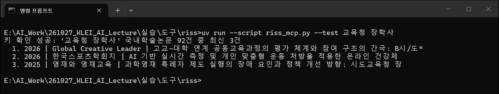
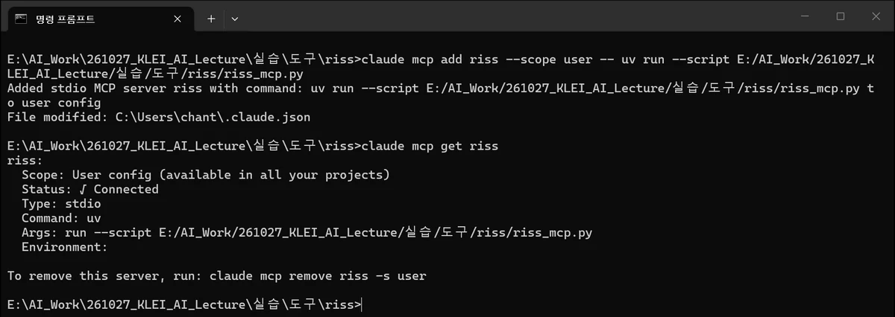
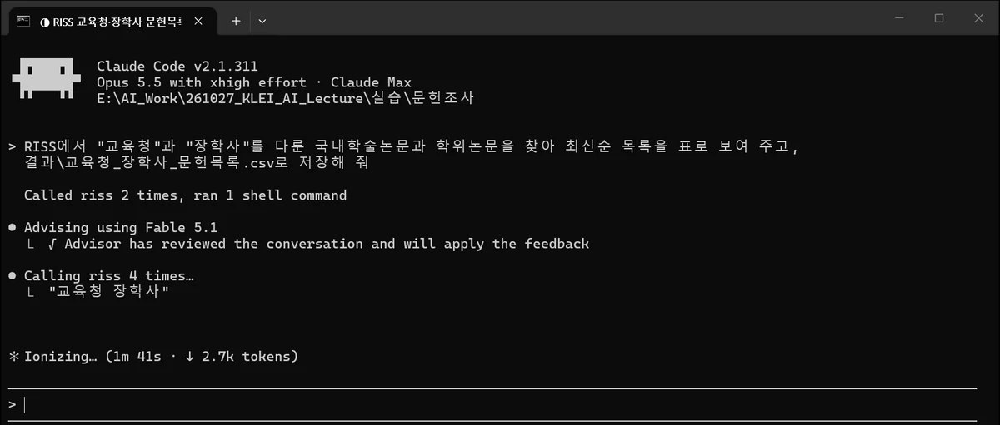

따라 하기 ②
RISS 문헌 검색을
클로드 코드에 연결하기
RISS 검색 API 키를 받아 클로드 코드에 연결하고, '교육청'과 '장학사'를 다룬 문헌을 찾아 목록을 CSV 파일로 만듭니다. 코덱스(ChatGPT)도 같은 방식으로 연결합니다.
1무엇을 받아올 수 있나
RISS 검색 API는 RISS 통합검색 결과를 프로그램으로 받아 오는 창구입니다. 발표자가 받은 키로 확인해 보니 자료 종류 여섯 가지를 검색할 수 있었습니다. 건수는 '직업교육'으로 검색했을 때의 결과입니다(해외학술논문은 'vocational education').
| 자료 종류 | type 값 | 검색 건수 | 받아오는 항목 (공통 항목 외) |
|---|---|---|---|
| 국내학술논문 | A | 16,474 | 학술지명, 권·호, KCI 등재 여부, 원문 무료·유료 |
| 학위논문 | T | 28,399 | 학위 구분(국내석사·국내박사 등) |
| 해외학술논문 | O | 39,116 | |
| 단행본 | U | 25,936 | 소장 정보 |
| 연구보고서 | F | 3,129 | |
| 학술지 | S | 20 | ISSN, 등재 여부 |
공통 항목은 제목, 저자, 발행처, 발행연도, 상세 페이지 링크, 그리고 초록·목차·원문이 있는지(Y/N)입니다. 결과는 XML 형식으로 오고, 한 번에 최대 100건씩 받습니다.
API가 주는 것은 서지 정보와 링크까지입니다. 초록과 원문은 링크를 눌러 RISS에서 봅니다. 공개강의와 CALIS 자료는 발표자 키로는 '인증 오류'가 나서, 승인 범위에 따로 넣어야 하는 것으로 보입니다.
2신청 자격 확인

- 기관 명의로 신청합니다. 신청서에 소속 기관 이름과 사업자등록번호를 적습니다. 발표자는 한국직업능력연구원 명의로 신청해 승인받았습니다.
- 키는 사람마다 따로 받습니다. 신청 화면에 "인증키는 타인에게 양도 및 공유가 불가합니다"라고 적혀 있습니다. 동료의 키를 빌려 쓰지 않고 각자 신청합니다.
- 대량 자동 수집은 금지입니다. 같은 화면에 "데이터를 대량으로 자동 수집하여 RISS 시스템에 과부하를 초래하는 경우 서비스 이용에 제한"이 있을 수 있다고 적혀 있습니다.
3이용 신청서 쓰기
- RISS(riss.kr)에 로그인합니다. 회원이 아니면 먼저 가입합니다.
- API 센터에서 위쪽 RISS 검색 API를 누르고, 왼쪽 메뉴의 이용신청하기로 들어갑니다.


신청서 항목은 발표자가 쓴 내용을 예로 들면 이렇습니다.
| 항목 | 발표자가 쓴 내용 | 메모 |
|---|---|---|
| 신청기관명, 사업자등록번호 | 한국직업능력연구원, 기관 사업자등록번호 | 소속 기관 것을 적습니다 |
| 담당자명·이메일·전화번호 | 신청자 본인 | 키는 신청자에게 발급됩니다 |
| 신청서비스 개요 | 직업능력 정책연구를 위한 논문, 보고서 및 학술지 검색(로컬) | '로컬'은 내 PC에서 쓴다는 뜻 |
| 신청서비스 대상(고객) | 한국직업능력연구원 연구자 | |
| 사용범위 | 학위논문, 국내학술논문, 해외학술논문, 단행본, 연구보고서, 학술지 | 필요한 자료 종류를 고릅니다 |
| API 신청 목적 | 논문, 보고서 및 학술지 검색을 API로 연결하고 LLM을 활용해 요약 및 분석 | |
| 신청서비스 URL, 연간 이용 현황 | (비워 둠) | 홈페이지가 없어 비워 두고 냈습니다 |
| 일일예상 검색건수 | 100 |
심사를 거쳐 승인되면 인증키(영문 소문자와 숫자 32자리)를 받습니다. 이 키가 다음 단계부터 쓰는 열쇠입니다.
4브라우저로 키 시험하기
아래 주소에서 여기에_내_키를 받은 키로 바꿔 브라우저 주소창에 넣습니다. 한글 검색어는 브라우저가 알아서 바꿔 보냅니다.
https://www.riss.kr/openApi?key=여기에_내_키&version=1.0&type=A&keyword=직업교육&rowcount=3
키가 맞으면 이런 XML이 나옵니다(실제 응답에서 한 건만 줄여 옮김). totalcount가 전체 건수이고, metadata 하나가 논문 한 편입니다.
<record> <head> <totalcount>16474</totalcount> <Error>0</Error> <ErrorMessage>No Error</ErrorMessage> </head> <metadata> <riss.type>A</riss.type> <riss.title>수요자 중심 직업교육연수가 특수교사의 연수만족도와 직업교육효능감에 미치는 효과</riss.title> <riss.author>이정은, 강영심, 정현지</riss.author> <riss.publisher>대구대학교 특수교육재활과학연구소</riss.publisher> <riss.pubdate>2014</riss.pubdate> <riss.stitle>특수교육재활과학연구</riss.stitle> <riss.reg>KCI등재</riss.reg> <riss.abstract>Y</riss.abstract> <url>http://www.riss.kr/link?id=A106205814</url> </metadata> </record>
키가 틀렸거나 승인 범위 밖의 자료 종류를 부르면 <Error>004</Error>, <ErrorMessage>인증 오류</ErrorMessage>가 나옵니다.
주소에 키가 그대로 들어가므로 이 화면을 캡처해 공유하지 않습니다. 시험이 끝나면 다음 단계처럼 키를 파일에 넣어 두고 씁니다.
5도구 폴더 준비
RISS와 클로드 코드 사이를 이어 주는 작은 프로그램(MCP 서버)을 이 자료와 함께 만들어 두었습니다. 키와 함께 실습\도구\riss\ 폴더에 둡니다.
실습\도구\riss\폴더를 만듭니다.- riss_mcp.py 내려받기 → 이 폴더에 저장합니다.
- 같은 폴더에 텍스트 문서를 만들어 이름을
riss_key.txt로 바꾸고, 메모장으로 열어 키 한 줄만 붙여 넣고 저장합니다.
실습\도구\riss\ ├─ riss_mcp.py ← RISS 연결 프로그램 └─ riss_key.txt ← 내 키 한 줄 (남에게 보내지 않음)
riss_mcp.py가 하는 일: 검색어·자료 종류·연도·건수·정렬을 받아 RISS에 묻고, 결과를 제목·저자·학술지·등재·링크 같은 이름표를 붙여 돌려줍니다. 키는 riss_key.txt에서 읽습니다. 파일을 메모장으로 열어 보면 내용을 확인할 수 있습니다.
6키가 되는지 확인
도구\riss 폴더에서 명령 프롬프트를 열고(준비 C) 아래를 입력합니다. 클로드 코드를 켜지 않고 프로그램만 시험하는 단계입니다.
uv run --script riss_mcp.py --test 교육청 장학사

7클로드 코드에 연결
같은 창에서 아래 명령으로 클로드 코드에 RISS 도구를 등록합니다. 경로는 내 PC의 riss_mcp.py 위치로 바꿉니다. 경로의 \는 /로 바꿔 씁니다.
claude mcp add riss --scope user -- uv run --script E:/AI_Work/261027_KLEI_AI_Lecture/실습/도구/riss/riss_mcp.py
claude mcp get riss

--scope user는 '내 모든 폴더에서 쓰겠다'는 뜻입니다. 어느 폴더에서 클로드 코드를 켜도 RISS를 쓸 수 있습니다.--script를 빼거나 경로에\를 쓰면, 발표자 PC에서는 연결이 끊기는 경우가 있었습니다. 위 모양 그대로 쓰는 것이 안전합니다.- 등록을 지우려면
claude mcp remove riss -s user를 입력합니다.
8문헌조사 폴더와 CLAUDE.md
실습\문헌조사\ 폴더와 그 안에 결과\ 폴더를 만들고, CLAUDE.md를 둡니다. 만드는 방법은 따라 하기 ①의 4단계와 같습니다. 키 파일 경로는 내 것으로 바꿉니다.
# 문헌 조사 - 문헌 검색은 RISS 도구(riss_search)를 쓴다. 키는 `E:\AI_Work\261027_KLEI_AI_Lecture\실습\도구\riss\riss_key.txt`에 있으니 화면에 출력하지 않는다. - 결과 목록은 `결과\`에 CSV(`utf-8-sig`)로 저장하고, 각 줄에 RISS 링크를 남긴다. - 한꺼번에 많이 받지 않는다(한 번에 100건 이하, RISS 대량 자동 수집 금지). - 한 일은 `Working_history.md`에 날짜와 함께 한 줄로 기록한다.
RISS의 이용 조건(키 비공개, 대량 수집 금지)을 CLAUDE.md에 적어 두면 클로드 코드가 작업할 때마다 지킵니다.
9검색해서 목록 CSV 만들기
문헌조사 폴더에서 터미널을 열고 claude를 실행한 뒤 이렇게 부탁합니다.
RISS에서 "교육청"과 "장학사"를 다룬 국내학술논문과 학위논문을 찾아 최신순 목록을 표로 보여 주고, 결과\교육청_장학사_문헌목록.csv로 저장해 줘


클로드 코드가 설명한 판단은 이랬습니다. 문헌 조사에서 사람이 하던 판단과 같습니다.
- 범위를 좁힌 이유: 전체 필드로 찾으니 학술논문 92건, 학위논문 183건이 나왔지만, 대부분은 초록에서 장학사를 한 번 언급한 정도였습니다. 그래서 두 말을 제목이나 주제어에 함께 다룬 논문만 남겼습니다.
- 최근 논문이 적은 이유: 17건 중 2020년대 논문은 2건뿐인데, 최근 연구는 '장학사' 대신 '교육전문직(원)'이라는 말을 주로 쓰기 때문으로 보인다고 했습니다.
- RISS 서지 오류: 12번 논문은 RISS에 영문 제목이 엉뚱하게 등록되어 있다고 짚었습니다(CSV가 아니라 RISS 원래 기록의 문제).
저장된 결과\교육청_장학사_문헌목록.csv는 17줄입니다. 엑셀로 열면 번호, 유형, 발행연도, 제목, 저자, 발행처, 학술지, 권, 호, 등재, 학위구분, 원문있음, 원문요금, 검색일치, 링크 열이 보입니다. 주요 열만 옮기면 아래와 같습니다.
| 번호 | 유형 | 연도 | 제목 (앞부분) | 저자 | 학술지·수여기관 | 등재·학위 |
|---|---|---|---|---|---|---|
| 1 | 국내학술논문 | 2025 | 과학영재 특례자 제도 실행의 장애 요인과 정책 개선 방향: 시도교육청 장학사 관점을 중심으로 | 유민희; 류춘열 | 영재와 영재교육 | KCI등재 |
| 2 | 국내학술논문 | 2022 | 한 도교육청 장학사의 경험에 관한 자전적 내러티브: 넘침과 모자람의 균형을 찾아서 | 오영범 | 내러티브와 교육연구 | KCI등재 |
| 3 | 국내학술논문 | 2011 | 지역교육청 유아 담당 장학사의 문화에 대한 질적 연구 | 서현; 이승은 | 한국유아교육학회 학술대회자료집 | |
| 4 | 국내학술논문 | 2010 | 초임 체육장학사 문화에 대한 사례연구 | 최흥섭; 박순이 | 학습자중심교과교육연구 | KCI등재 |
| 5 | 국내학술논문 | 2009 | 유아 담당 장학사의 어려움과 보람, 그리고 희망 | 이대균 외 2명 | 유아교육학논집 | KCI등재 |
| 6 | 학위논문 | 2009 | 장학사의 직무 인식과 역할 재정립: 강원도교육청 소속 장학사를 중심으로 | 김영자 | 한국교원대학교 정책대학원 | 국내석사 |
| 7 | 학위논문 | 2009 | 교원 및 장학사의 인식으로 본 장학의 개념 연구: 충청북도교육청 장학을 중심으로 | 백우정 | 한국교원대학교 정책대학원 | 국내석사 |
| 8 | 학위논문 | 2009 | 울산광역시 교육청 장학사의 업무부담에 관한 문화기술적 사례연구 | 김상호 | 울산대학교 | 국내석사 |
| 9 | 국내학술논문 | 2008 | 지역교육청의 장학사 문화에 관한 질적 사례 연구 | 장원규 | 교육학연구 | KCI등재 |
| 10 | 학위논문 | 2003 | 지역교육청 중등장학사의 직무수행에 관한 질적 연구 | 표관식 | 고려대학교 행정대학원 | 국내석사 |
| ... | 11~17번은 2003~1973년 학위논문 7편(한자 제목 포함) | |||||
이어서 해 볼 만한 부탁
'교육청 교육전문직'으로도 검색해서 목록에 추가해 줘
목록을 연대별로 나눠서 연구 주제가 어떻게 바뀌었는지 정리해 줘
초록 본문은 API로 오지 않으므로, 요약을 부탁하면 클로드 코드는 제목과 서지 정보만 보고 정리합니다. 깊이 읽을 논문은 링크로 원문을 확인합니다.
10코덱스와 웹에서는
코덱스(ChatGPT)
같은 riss_mcp.py를 그대로 씁니다. 등록 명령만 다릅니다.
codex mcp add riss -- uv run --script E:/AI_Work/261027_KLEI_AI_Lecture/실습/도구/riss/riss_mcp.py
이 명령은 코덱스 설정 파일(config.toml)에 아래 내용을 넣습니다. 파일을 직접 고쳐도 됩니다. codex mcp list로 등록됐는지 봅니다.
[mcp_servers.riss] command = "uv" args = ["run", "--script", "E:/AI_Work/261027_KLEI_AI_Lecture/실습/도구/riss/riss_mcp.py"]
그다음 8단계의 CLAUDE.md를 AGENTS.md로 복사해 두고, 문헌조사 폴더에서 codex를 실행해 9단계와 같은 부탁을 합니다. (발표자 PC에서는 등록과 설정 파일까지 확인했고, 코덱스 실행 화면은 싣지 않았습니다.)
클로드 웹, 챗GPT 웹
브라우저에서 쓰는 클로드(claude.ai)와 챗GPT는 인터넷에 공개된 서버만 연결할 수 있습니다. 이 자료의 RISS 도구는 내 PC에서 돌고, 키는 남과 나눌 수 없으니 공개 서버로 올리는 것도 맞지 않습니다. 그래서 웹에서는 이렇게 씁니다.
- 검색은 내 PC에서, 분석은 웹에서: 9단계처럼 클로드 코드로 목록 CSV를 만든 뒤, 그 파일을 웹 채팅에 올려 분류·정리를 부탁합니다.
- 데스크톱 앱: 내 PC에 설치하는 클로드 데스크톱 앱은 내 PC의 MCP 서버를 연결할 수 있습니다. 설정 방법은 앱의 안내를 따릅니다.
① 키는 나만 씁니다(양도·공유 금지). ② 한 번에 100건 이하로, 필요한 만큼만 받습니다(대량 자동 수집 금지). ③ RISS 검색 결과는 BY-NC-ND 조건이라, 출처(RISS, KERIS)를 밝히고 영리 목적이나 2차 저작물로 쓰지 않습니다.